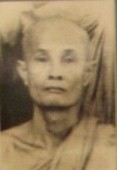

BuddhaSasana
Home Page
This document is written in Vietnamese, with Unicode
Times font
Tỳ kheo Thiện Minh
|
 Hòa thượng Thiện Luật, thế danh Ngô Bảo Hộ, sinh năm Mậu Tuất 1898 tại Sa Ðéc, nay là tỉnh Ðồng Tháp. Phụ thân Ngài là cụ Ngô Văn Nghi - vốn là người Triều Châu, do điều kiện sinh hoạt nên đã đưa cả gia đình sang Cao Miên lập nghiệp tại tỉnh Prey-Veng (hay Lò Veng, tức làng Hòa Mỹ theo cách gọi của cộng đồng người Việt xa xứ). Cụ ông Ngô Văn Nghi tinh thâm Hán văn, giỏi Ðông y, Tử vi đẩu số và còn là một Kỳ vương kiệt xuất. Ðược lớn lên bên một người cha đa tài như vậy, nên từ thuở trẻ Ngài đã sớm hấp thụ những tinh hoa ấy. Ngoài kiến thức lập thân học được từ thân phụ, Ngài còn là một thanh niên được bạn bè nể phục vì bản tính cương liệt, khả năng võ thuật hơn người và ngón đàn độc huyền một thời xao động những đêm trăng vàng ở làng Hòa Mỹ xa xôi kia. Cũng không ít những thanh niên bản xứ của đất nước chùa tháp kia đã từng theo học những ngón nghề của nam tử tài hoa Ngô Bảo Hộ. Thuận theo thế thường, năm 26 tuổi Ngài lập gia đình cùng bà Lưu Kim Phùng, con gái của một gia đình kiều bào cùng sinh sống tại làng Hòa Mỹ. Cuộc sống gia đình chỉ tròn 8 năm thì bà qua đời, để lại cho Ngài 4 người con thơ, 1 trai 3 gái, rồi đến con gái thứ cũng ra đi theo bà. Buồn vì nỗi bất hạnh của gia đình, Ngài được các vị Sư ở chùa làng thuyết giảng, bỗng nhận chân ra lý vô thường, thế là Ngài quyết định chọn cho mình hướng đi giải thoát. Năm Giáp Tuất 1934, Ngài dẫn theo con trai là Ngô Bửu Ðạt đến chùa Prek-Reng, một ngôi chùa ở ven sông xin xuất gia. Hòa thượng trụ trì chấp thuận cho Ngài thọ giới Sa di, ban cho pháp danh là Thiện Luật, còn con trai Ngài thì được Hòa thượng nhận làm nghĩa tử, dưỡng nuôi trong chùa hầu cận chư Tăng. Tu học tại đây một thời gian, Ngài quyết định rời chùa Prek-Reng, đưa con trai đến gởi nơi Niệm Phật Đường Thiền Lâm của kiều bào lập nên, do Bác sĩ Lê Văn Giảng quản trị (sau này là Hòa thượng Hộ Tông). Riêng Ngài, đến tu học tại chùa Sùng Phúc ở quận 5, thành phố Phnom-Pênh, cũng là ngôi chùa do kiều bào Việt Nam xây dựng trên đất Cao Miên. Có thể nói đây là cơ sở đầu tiên để hệ phái Phật giáo Nam Tông du nhập vào xã hội người Việt sau này. Chùa đây là nơi phát hành tờ đặc san đầu tiên của Phật giáo Nam Tông Việt Nam, cùng một số kinh sách Nam Tông bằng tiếng Việt. Năm Ðinh Sửu 1937, lúc 39 tuổi, Ngài chính thức thọ giới Tỳ kheo với Thầy Tế độ là Ngài Phó Tăng Thống Cao Miên là Hòa thượng Uttamamuni Um-Su, Thầy Yết ma là Hòa thượng Som Dach Choun Nath (sau là vua Sãi Cao Miên) và Thầy Giáo thọ hướng dẫn Phật học là Ngài Hout-That (về sau là Phó Tăng thống, cuối cùng là vua Sãi, bị Pôn-Pốt sát hại năm 1975). Ba vị trên đây cùng Hòa thượng Chan-Wang là bốn vị học giả uyên thâm, lừng danh nhất của Cao Miên thời bấy giờ. Sau khi thọ đại giới Tỳ kheo, Ngài nhập chúng tu học tại chùa Sri Sagor, tại đây có khoảng 25 vị Tăng Việt Nam cùng tu học, Ngài được xem là Sư huynh chăm sóc vấn đề ăn ở cho anh em đồng hương. Ngài bắt đầu chuyên tâm nghiên cứu Luật tạng, trước là để tu trì, sau là để chuẩn bị cho tâm nguyện hoằng truyền Phật pháp về quê hương, mà Ngài tự cảm nhận mình có phần lớn trách nhiệm gánh vác. Năm Canh Thìn 1940, sau khi xin phép cho con trai được thọ giới Sa di, Ngài cũng xin phép Hòa thượng trụ trì chùa Sri Sagor cho mình trở về Niệm Phật Đường Thiền Lâm để tu học và xây dựng lại vì chùa đổ nát. Về đây, Ngài nhặt nhạnh từng thanh gỗ viên ngói, dốc lòng tái thiết chùa Thiền Lâm khang trang hơn trước. Với tâm nguyện cũ ngày nào vẫn canh cánh bên lòng, Ngài tiếp tục tạo mọi điều kiện nâng đỡ chư Tăng Việt Nam. Một số vị Giáo thọ Sư từ hệ phái Bắc Tông cũng đã tìm đến đây tá túc tầm đạo. Trong đó có Ngài Ấn Lâm, khi mới chuyển từ Bắc phái sang Nam truyền (về sau là Tăng thống hệ phái Nam Tông Việt Nam) cũng đã một thời cư ngụ tại đây. Cùng năm này, nhận thấy con đường hành đạo của mình không thể chỉ là những tháng ngày gởi mình nơi đất khách, Ngài bắt đầu nghĩ nhiều về quê hương Việt Nam. Nhân duyên đến lúc chín muồi, được sự động viên của Hòa thượng Choun Nath cùng chư Tăng Phật tử Việt Nam, Ngài về nước thu nhận chùa Bửu Quang ở Gò Dưa, Thủ Ðức làm ngôi chùa đầu tiên của Phật giáo Nam Tông tại Việt Nam. Cùng đi với Ngài còn có Sư Hộ Tông, Sư Hộ Giác và các Phật tử kiều bào. Năm Tân Tỵ 1941, do Sư Hộ Giác không quen được với phong thổ mới nên ngã bệnh, buộc lòng Ngài đưa Sư trở lại Phnom-Pênh, Ngài đến ngụ tại chùa Mahàmantrey, và được xem là huynh trưởng của một nhóm chư Tăng Việt Nam mười mấy vị. Ngài ngụ tại chùa Mahàmantrey tiếp tục nghiên cứu Luật tạng cho đến kỳ kiết tập Tam tạng lần thứ 6 năm 1954 tại Miến Ðiện. Năm Bính Thân 1956, Ngài được Phật tử Việt Nam thỉnh về chùa Kỳ Viên ở Bàn Cờ, Sài Gòn để thuyết giảng Phật pháp thường kỳ tại đây. Tháng 4 năm 1957, Giáo hội Phật giáo Nam Tông Việt Nam được chính thức thành lập, một Hội đồng Tăng Già Chưởng quản do Ngài Bửu Chơn đảm nhiệm Tăng thống và Ngài làm Phó Tăng thống. Năm Ðinh Dậu 1957, Ngài được Phật tử cung thỉnh về chùa Phổ Minh ở Gò Vấp, Gia Ðịnh. Tại đây, Ngài đã thu nhận các đệ tử xuất gia, mở lớp giảng dạy chư Tăng Nam Tông được trên mười vị, hầu hết đều còn trẻ tuổi, đó là lớp chư Tăng Nam Tông đầu tiên được đào tạo tại Việt Nam, do Ngài và Sư Hộ Giác sau khi tốt nghiệp về nước trực tiếp phụ trách giảng dạy. Năm Mậu Tuất 1958, Ngài cùng Sư Hộ Giác kiến lập chùa Pháp Quang ở gần cầu Bình Lợi, Gia Ðịnh và về đây trụ trì. Chư Tăng Nam Tông từ đó có một Học viện hẳn hoi. Ngôi trường này đã đào tạo nên nhiều Tăng tài phục vụ cho Giáo hội cũng như tu học hoằng truyền Phật pháp trên khắp thế giới. Năm Quý Mão 1963, chính sách kỳ thị tôn giáo của chế độ Ngô Ðình Diệm được thực hiện khốc liệt với Phật giáo Việt Nam. Trong tư cách một tu sĩ, một vị lãnh đạo tinh thần cho nhiều Tăng Ni Phật tử, Ngài đã có mặt trong Ủy ban Liên phái Bảo vệ Phật giáo, đấu tranh cho quyền tự do, bình đẳng của Phật giáo đến khi thành công. Năm Giáp Thìn 1964, sau khi chế độ Ngô Ðình Diệm cáo chung, Giáo hội Phật giáo Việt Nam Thống nhất được thành lập, Ngài được suy cử ngôi vị Phó Tăng thống Giáo hội Phật giáo Việt Nam Thống nhất. Năm Bính Ngọ 1966, Ngài được bầu làm Chủ tịch Ủy ban Bảo vệ Hiến chương Phật giáo, và Ngài giữ chức vụ này cho đến cuối đời. Tuy Phật sự nặng gánh nhưng việc tu tập và truyền pháp lợi sanh của Ngài vẫn không hề giảm bớt, như tâm nguyện góp phần tạo nên một hệ phái Phật giáo Nguyên thủy của người Việt ngày càng phát triển vững chắc trong ngôi nhà chung Phật giáo Việt Nam. Tuổi già sức yếu, Hòa thượng Thiện Luật đã viên tịch vào ngày mùng 9 tháng 7 năm Kỷ Dậu, nhằm ngày 21 tháng 8 năm 1969, tại chùa Pháp Quang, thọ thế 71 năm, có 32 tuổi Hạ. -ooOoo- |
last updated: 25-02-2005